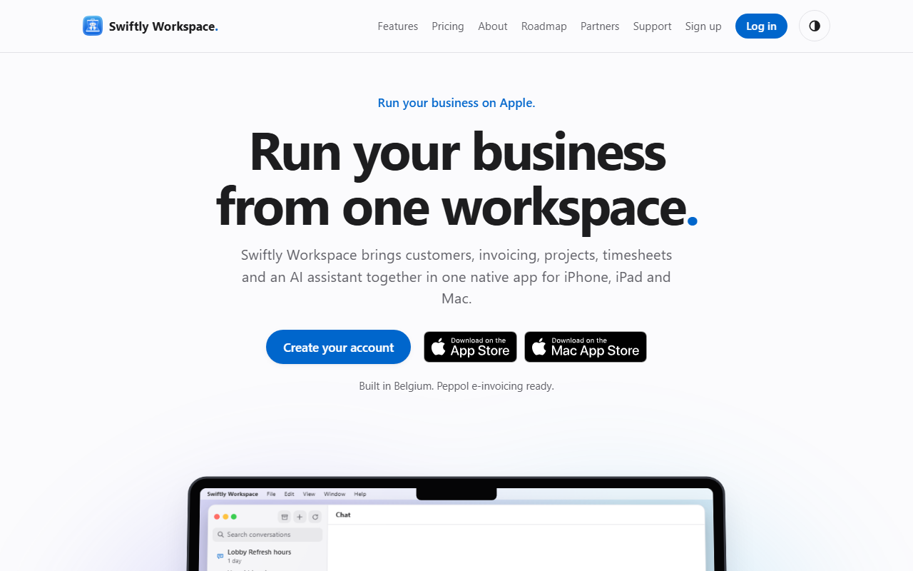

Channel focus
Social · SEO · Email
Swiftly Workspace · 2025–2026
Building a brand's digital presence from the ground up
As Marketing Coordinator, I supported Swiftly Workspace's digital strategy end to end — strengthening brand presence, building content systems, and connecting campaigns across social, search, and email.
- Expanded social media presence across multiple platforms, improving visibility and reach
- Developed integrated content, SEO, email, and engagement campaigns to support lead generation
- Used campaign data and customer insights to refine strategy and reporting